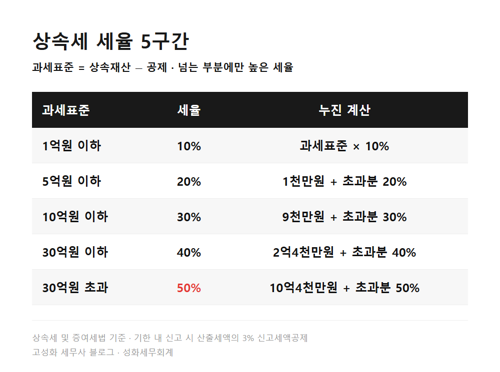
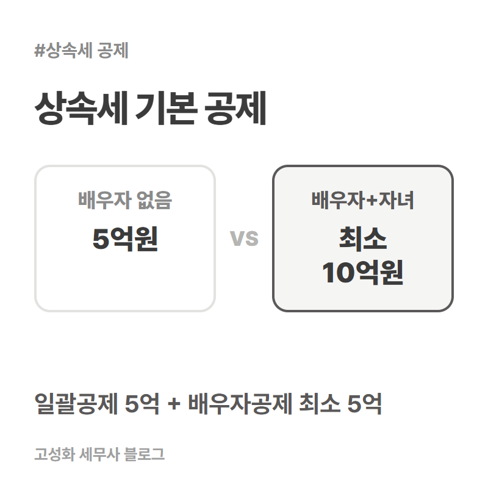
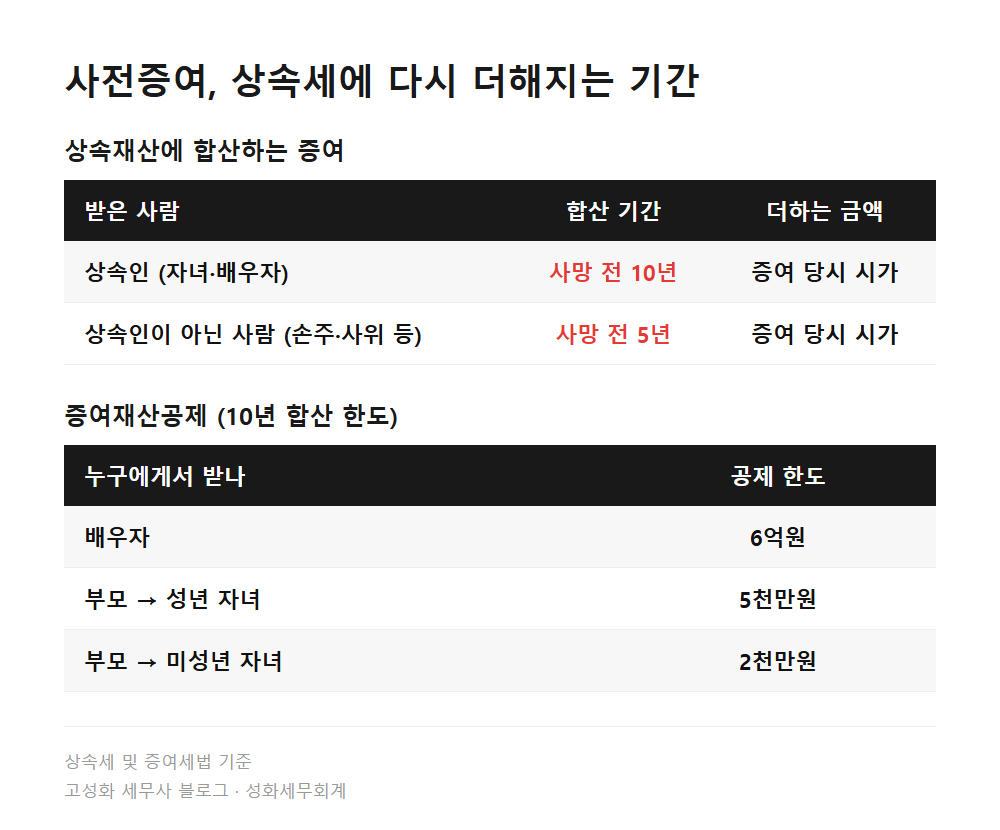
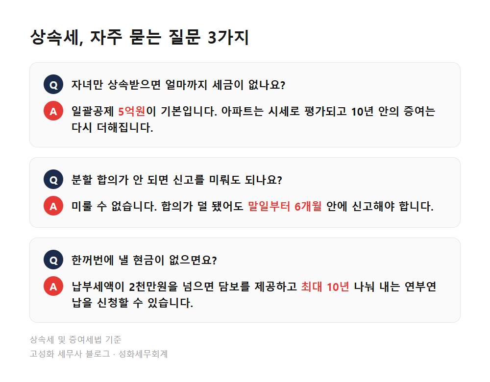

부모님 돌아가신 후 상속세 신고 순서, 5가지로 정리 2편

부모님이 돌아가신 뒤 상속세는 다섯 가지 순서로 보시면 됩니다. 기한 확인, 세금이 얼마나 나오는지 계산, 낼 현금이 모자랄 때의 방법, 돌아가시기 전 증여 합산, 그리고 놓치기 쉬운 재산 확인입니다.
신고기한은 돌아가신 날이 속한 달의 말일부터 6개월이고, 이 안에 다섯 가지를 한 번에 정리해 신고서 하나로 내야 합니다.
지난 글에서는 상속 후 6개월 안에 끝내야 할 세금 일정 다섯 가지를 날짜 순서로 정리했습니다. 이번 글은 그 일정을 처리하면서 실제로 따져봐야 하는 내용을 항목별로 짧게 묶었습니다.
각 항목은 이 글만 읽어도 흐름이 잡히게 썼고, 더 자세한 내용은 따로 정리해둔 글을 연결해두었습니다.
- 1. 기한, 말일부터 6개월 안에 신고와 납부까지
- 2. 얼마나 나오나, 공제와 세율로 계산해보기
- 3. 낼 현금이 부족하면, 연부연납과 물납
- 4. 돌아가시기 전에 증여한 재산은 다시 더해집니다
- 5. 자주 놓치는 재산, 보험금과 계좌이체
한눈에 보기




자주 묻는 질문
배우자 없이 자녀만 상속받으면 얼마까지 상속세가 없나요?
일괄공제 5억원이 기본입니다. 다만 아파트는 시세로 평가되고, 10년 안에 자녀에게 증여한 재산은 다시 더해지기 때문에 재산 목록을 시가로 정리해봐야 정확히 알 수 있습니다.
상속인끼리 분할 합의가 안 되면 신고를 미뤄도 되나요?
미룰 수 없습니다. 합의가 덜 됐어도 기한 안에 신고는 해야 합니다. 배우자 상속공제는 신고기한 다음 날부터 9개월 안에 분할과 등기를 마쳐야 인정된다는 점도 같이 기억해두세요.
상속세를 한꺼번에 낼 현금이 없으면 어떻게 하나요?
납부세액이 2천만원을 넘으면 담보를 제공하고 최대 10년까지 나눠 내는 연부연납을 신청할 수 있습니다. 부동산과 유가증권 비중이 크면 물납도 검토할 수 있습니다.
정리하면
부모님 돌아가신 후 상속세는 기한, 공제와 세율, 납부 방법, 사전증여 합산, 놓치기 쉬운 재산까지 다섯 가지가 한 장의 신고서로 모입니다. 항목 하나하나는 어렵지 않은데, 재산을 시가로 평가하고 10년 치 증여를 거슬러 찾는 일이 동시에 걸려 있어 순서를 잡기가 쉽지 않습니다.
지금 당장 해볼 수 있는 것이 하나 있습니다. 금융감독원 상속인 금융거래조회 서비스로 돌아가신 분 명의의 예금, 보험, 증권 계좌부터 확인해보세요. 정부24의 안심상속 원스톱서비스로 신청하셔도 함께 조회됩니다. 재산 목록이 손에 잡혀야 위 다섯 가지를 따져볼 수 있습니다.
평소 장부를 맡기시는 세무사가 따로 있으셔도 괜찮습니다. 상속 건만 따로 봐드릴 수 있으니, 조회 결과를 들고 편하게 문의 주세요.
본문 전체와 근거 조문은 블로그에서 확인하실 수 있습니다.